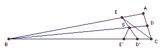

BD and CE are angle bisectors of the triangle ABC. ∠BDE = 24o and ∠CED = 18o. Find angles A, B, C.
Solution

∠SBC + ∠SCB = 180o - ∠BSC = ∠SED + ∠SDE = 42o. Hence ∠B + ∠C = 84o, so ∠A = 96o.
Take D' on BC such that CD' = CD, and E' on BC such that BE' = BE. Let ED' meet BD at S. ∠ESB = ∠SED + ∠SDE = 2·18o + 24o = 60o. Hence ∠E'SB = 60o. Hence ∠D'SE' = 60o. So E'S is the external bisector of ∠D'SD.
Now EC is perpendicular to DD', so ∠EDD' = 90o - ∠CED = 72o. ∠EDE' = 2·24o, so ∠E'DD' = 72o - 48o = 24o. But ∠E'DS = ∠EDS = 24o, so E'D is the bisector of ∠SDD'. Hence E' must also lie on the external bisector of ∠DD'S. In other words, ∠E'D'S = ∠CD'D. But ∠ED'D = 180o - ∠D'ED - ∠D'DE = 180o - 2·18o - 72o = 72o. Hence ∠CD'D = (180o - 72o)/2 = 54o. Hence ∠C = 180o - 2·54o = 72o. Hence ∠B = 12o.

© John Scholes
jscholes@kalva.demon.co.uk
25 Nov 2003
Last updated/corrected 25 Nov 2003